Background: FamilySearch is a free family history site aimed at connecting everyone by forming a worldwide collaborative family tree. As part of that effort, users can add photos and stories about themselves or their family to share with others. The FamilySearch mobile app is great for creating and capturing memories using ones mobile phone.
Discover
Before diving in, I familiarize myself with the existing product, those who use it, their goals, the mobile style guide and any constraints for the project. This helps me to point myself in the right direction before taking my first steps.
Ideate
I prefer not to do any of this by myself. I take the research that I have done and I compile it into a place where I can share it with others. I share my notes on Slack and Trello. I grab a marker, a stack of post-it notes and find a whiteboard. I sketch ideas and work to organize it into a flow. For this project I did it twice. By the end of the first session I had something worth pursuing. That crumbled after about a week. I realized that the flow was solving one problem and causing a few more. Session two resulted in a simpler flow. I prioritize the ideas and decide which ones would contribute to creating a minimum viable product.
Prototype
I took the whiteboard flows that we created and make them into wireframes using Sketch. These will be the screens for the test. Wireframing takes my quick and dirty whiteboard drawings and turns them into quick and less dirty mockups that communicate the basic ideas. I like to use Invisionapp to make prototypes.
Test
Lots and lots of testing.The tests are shown to a variety of people. I like to test in person when possible. I prefer to record it or have another person to take notes. It normally does not take long to see the pain points and confusion from the design. I tweak the test until it flows smoothly.
Release the Krakin
When I feel confident about the experience I turn the wireframes into hi-fidelity designs and test again as necessary. When it feels stable I export and optimize the assets that the developers need. I work closely with them to see that the product works and feels right.


 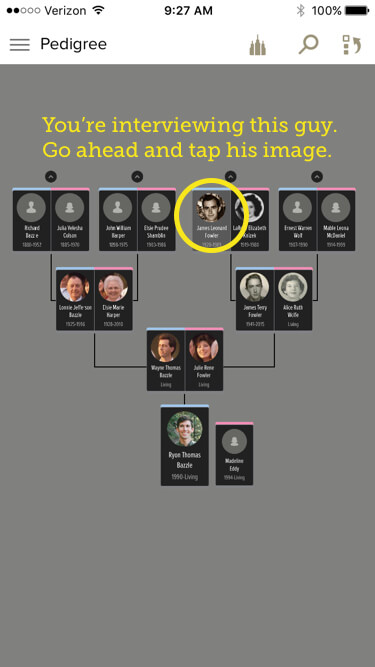
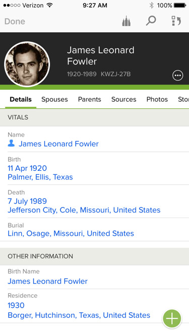
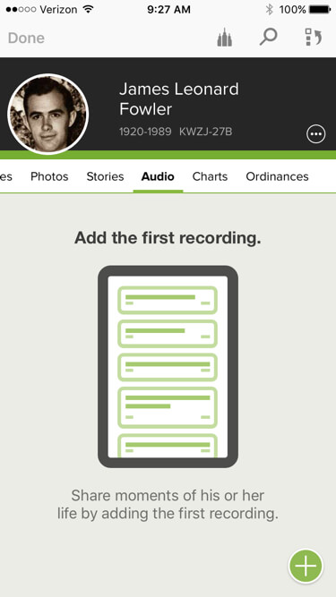
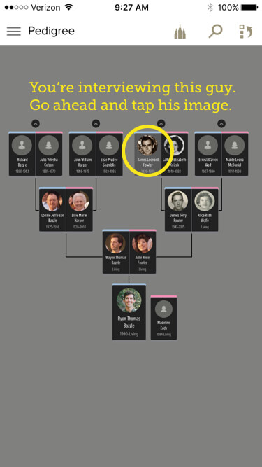
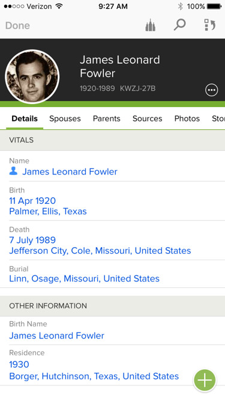
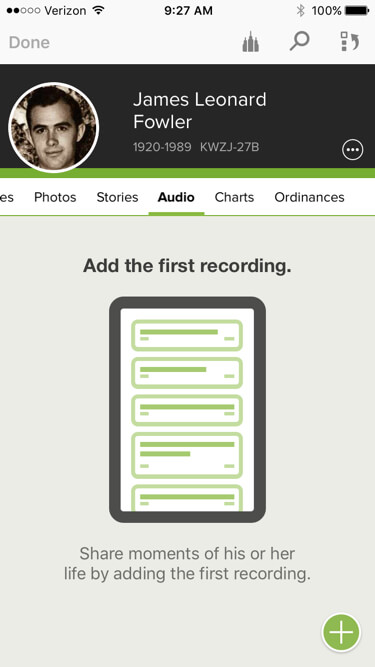


 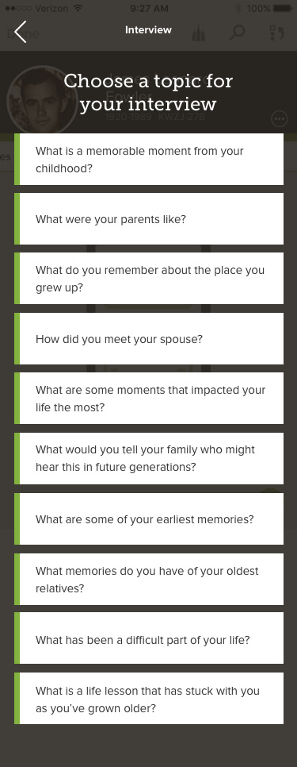
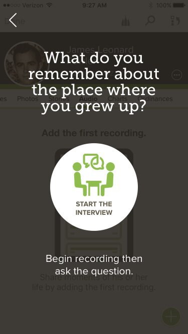
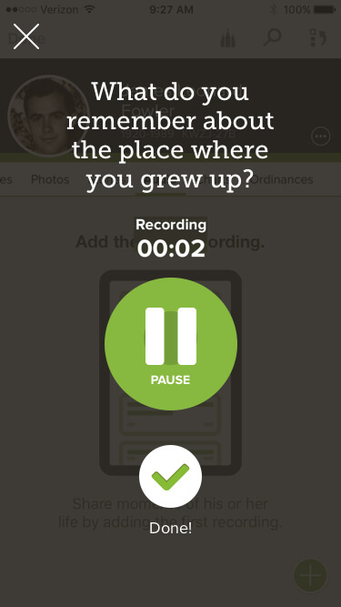
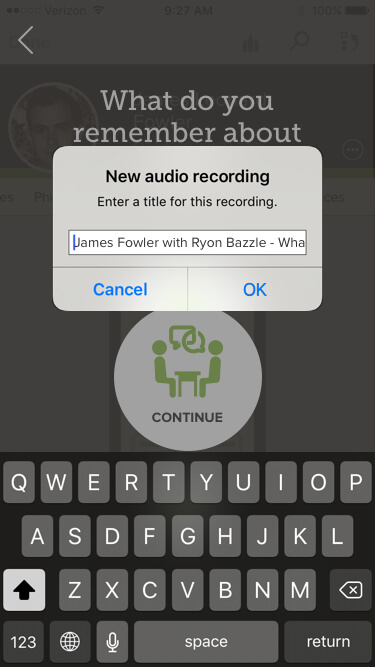
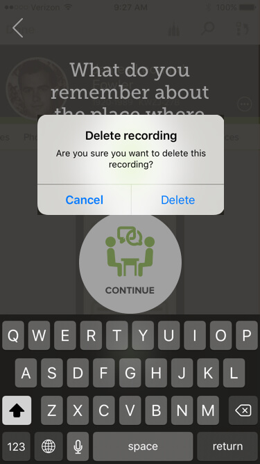
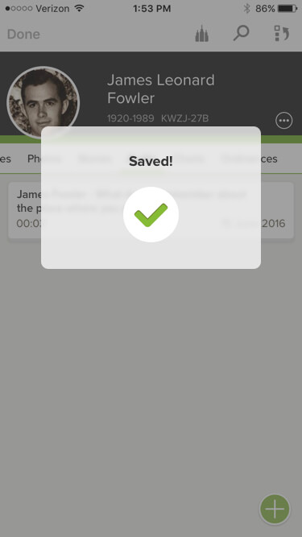
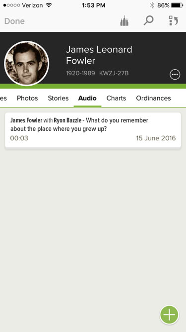
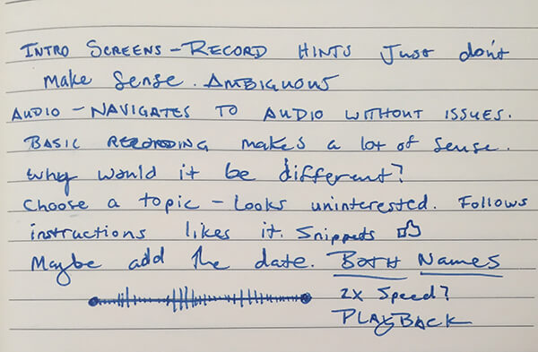
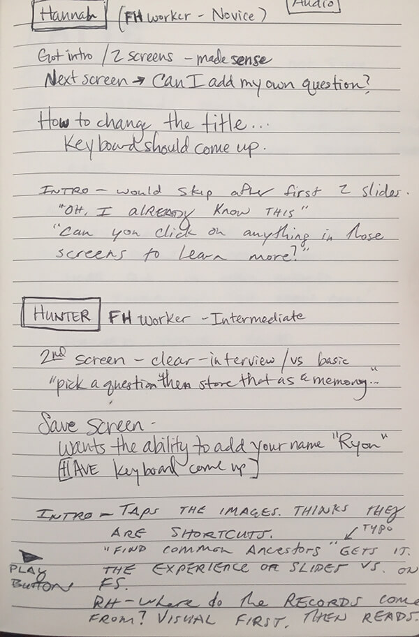
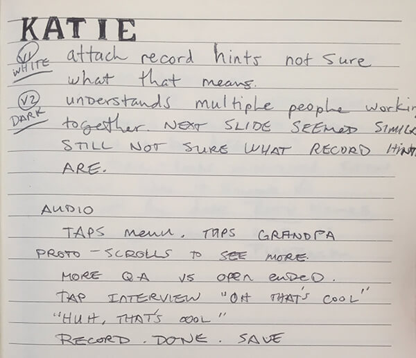
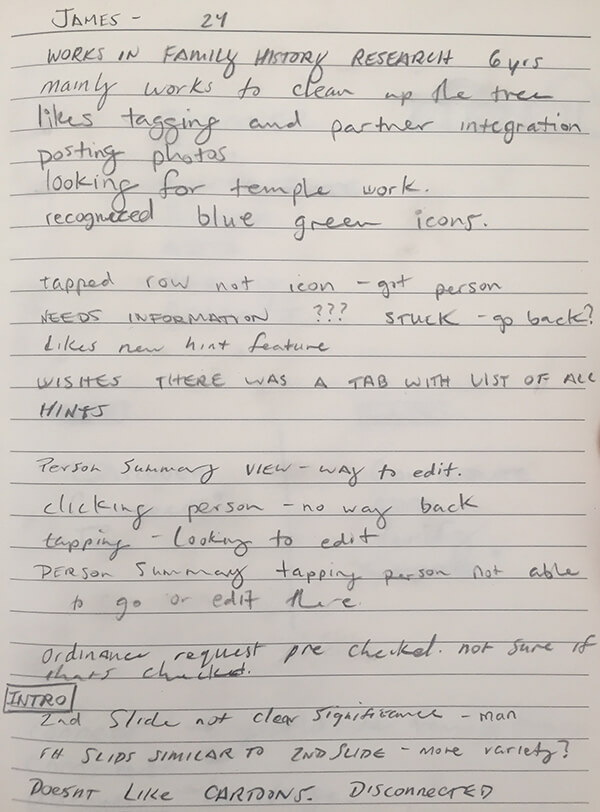
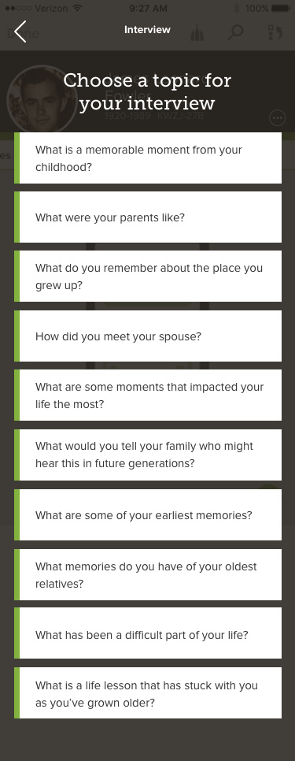
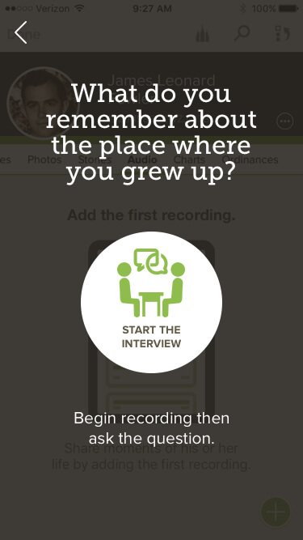
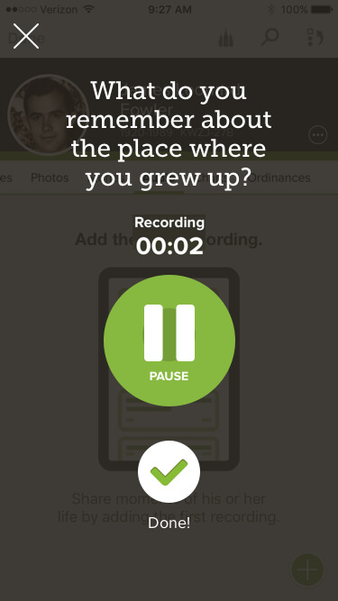
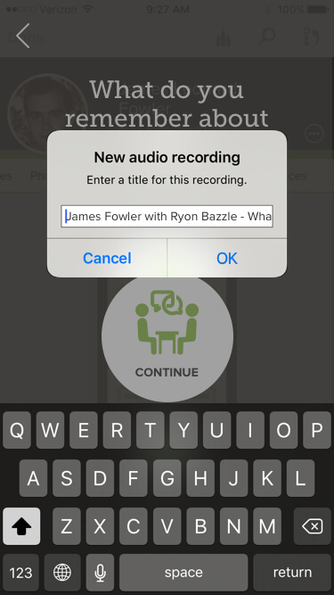
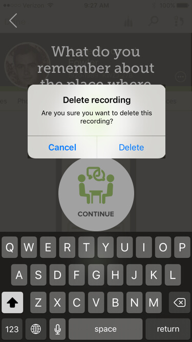
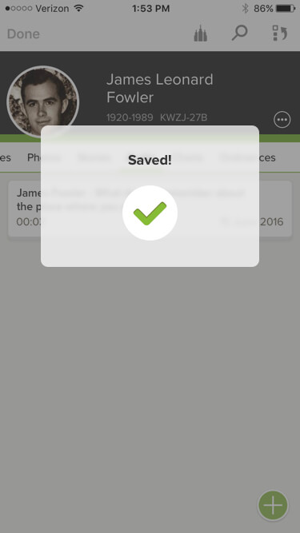
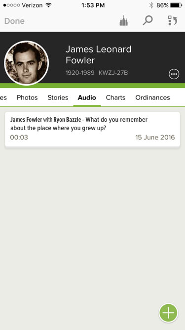
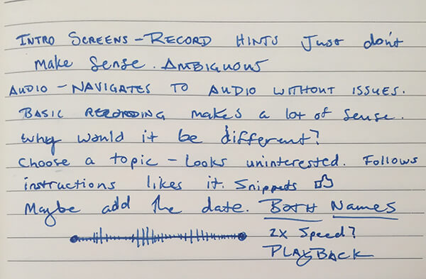
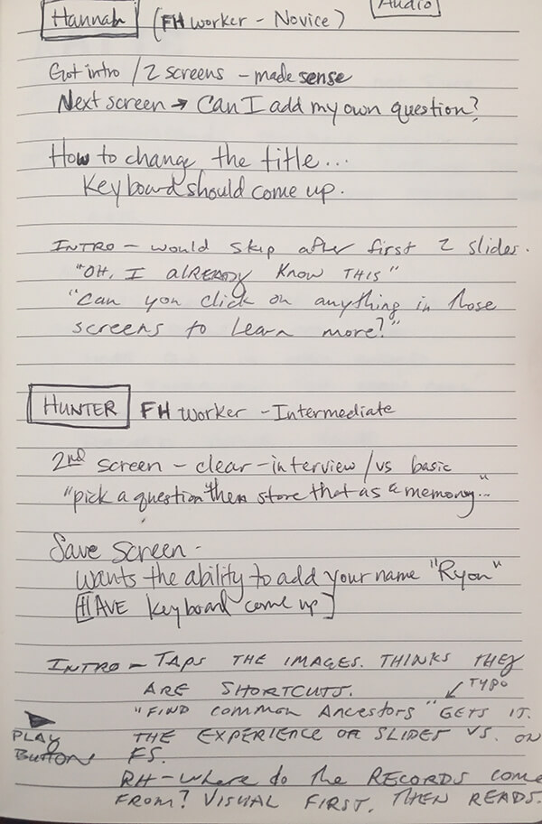
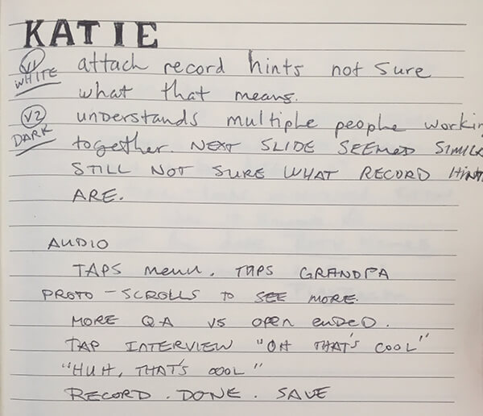
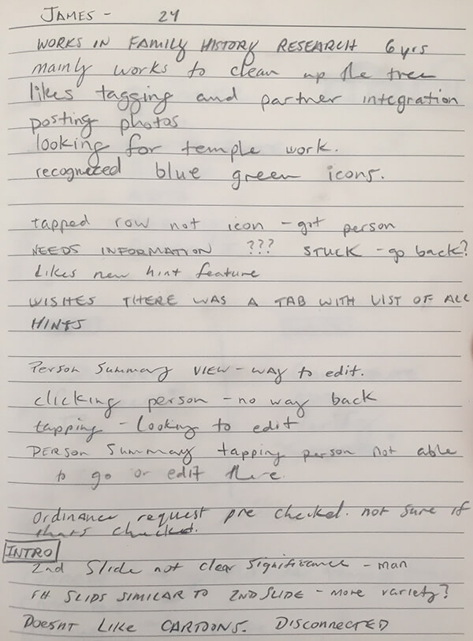